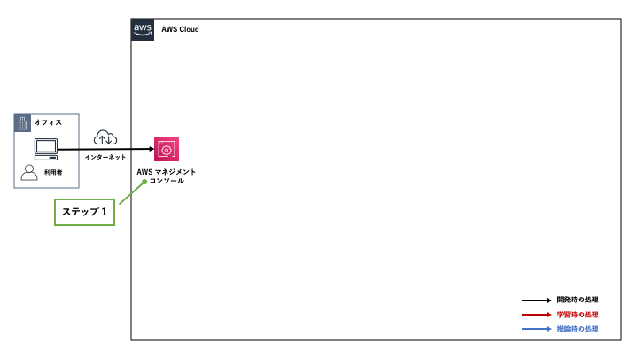
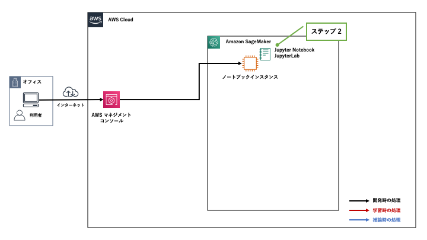
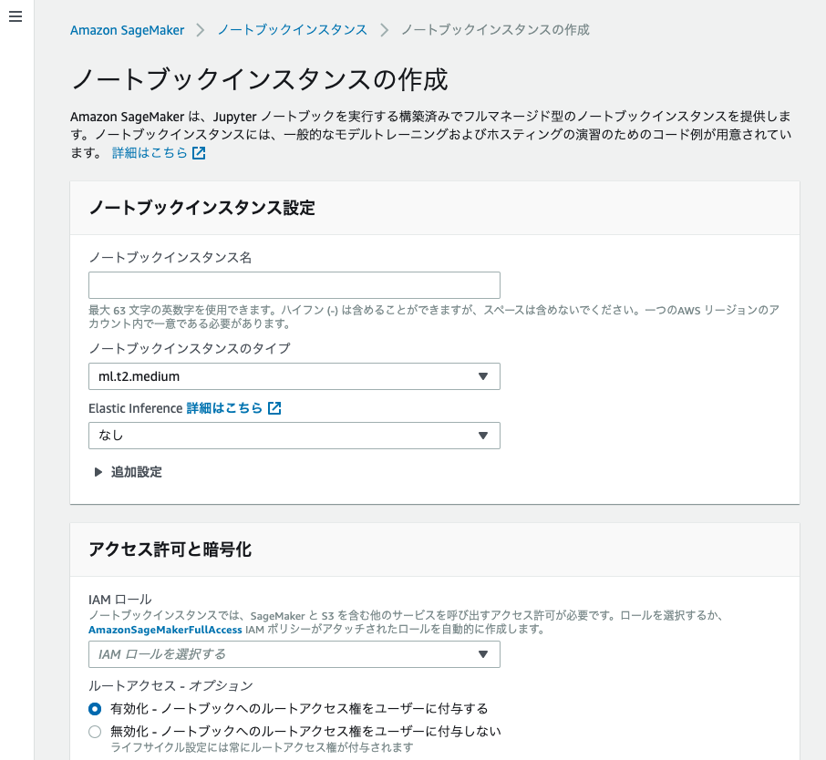
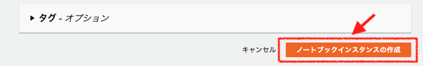

[第5回] Amazon SageMaker の基本的な使い方を理解する (1)¶
はじめに¶
Amazon SageMaker を使って実際に「開発」を始めるまでの準備作業の流れがわかる。
Amazon SageMaker を使って、「開発」「学習」「推論」の流れがわかる。
実際に Amazon SageMaker を使う¶
「機械学習モデルの構築およびトレーニング、デプロイ with Amazon SageMaker」 というチュートリアルがありますので、これをベースに進めたいと思います。
チュートリアルの概要¶
今回利用するチュートリアルの概要を下記に示します。
Amazon SageMaker を使って、「開発」「学習」「推論」の一連の流れを体験できるものである。
学習・推論に利用するデータは、カリフォルニア大学アーバイン校 (UCI) が公開しているオープンデータを利用する。 「Bank Marketing Data Set」と呼ばれる「ポルトガルの銀行マーケティングキャンペーン」のデータを利用する。
このデータはポルトガルの金融機関が顧客に電話によるダイレクトマーケティングキャンペーンを行った際のデータが記録されている。
データには大きく2種類の情報が記録されている。
データ 1：「年齢」や「職業」といった顧客の属性情報
データ 2：ダイレクトマーケティングを行った結果、その顧客が定期預金を申し込んだか否かのフラグ
「データ 1」から機械学習アルゴリズムによって何らかのパターンを見出して、これから営業をかける顧客 (「データ 2」が未知の顧客) の中から「定期預金を申し込む見込みのある顧客」を予測して営業活動に役立てる。
機械学習を使って見込み顧客を予測ができることにより、営業活動を効率化することができます。つまり、無策に顧客名簿の上から順に営業をかけるよりも顧客を獲得できる可能性が高まるということであり、機械学習を導入する意義はここにあります。
これから数回の記事で実施すること¶
今回利用するチュートリアルは 30 分以内に実施可能な簡単な内容ですが、下記を理解できるよう注意しながら詳しく解説を進めていきます。
「自分が Amazon SageMaker を使って今何をしているのか」
「Amazon SageMaker が背後でどのような処理が行っているか」
工程 |
ステップ |
枝番 |
実施内容 |
連載回 |
|---|---|---|---|---|
開発 |
1 |
Amazon SageMaker コンソールにログインする |
第 5 回 |
|
2 |
Amazon SageMaker notebook instance を作成する |
第 5 回 |
||
3 |
データの準備 |
第 6 回 |
||
3a, 3b |
ノートブックを起動する |
|||
3c |
ノートブックの利用準備をする |
|||
3d |
S3 バケットを作成する |
|||
3e |
学習・推論に利用するデータをダウンロードする |
|||
3f |
データを分割する |
|||
学習 |
4 |
データからのモデルのトレーニング |
第 7 回 |
|
4a |
学習データを S3 バケットにアップロードする |
|||
4b |
学習の設定をする |
|||
4c |
学習を行う |
|||
推論 |
5 |
モデルのデプロイ |
第 8 回 |
|
5a |
推論エンドポイントを作成して、モデルをデプロイする |
|||
5b |
推論を行う |
|||
6 |
モデルの性能評価 |
第 8 回 |
||
後片付け |
7 |
リソースを終了する |
第 8 回 |
注意事項¶
今回の記事の内容を実施する際の注意事項を下記に示します。
第 4 回 の記事で「開発」「学習」「推論」の流れを示しました。概ね同じ流れであるものの、チュートリアルの手順とは多少前後する箇所があるのでご注意ください。
記事で示す画面イメージや手順は、2020年7月11日時点のものとなります。仕様変更などにより表示内容や設定値に変更が入る可能性がありますので、予めご了承ください。
想定外の影響を避けるため、本番環境 (商用サービスが稼働する AWS アカウント) ではなく、開発環境や検証環境で実施してください。
AWS アカウントを持っていない場合は、「Amazon SageMaker をセットアップします」を参照して取得・セットアップをしてください。 今回は Amazon SageMaker Studio は利用しないため、下記の 2 つの手順を実施してください。
- チュートリアルでは下記の 4 つのいずれかのリージョンで作業する前提となっています。この記事では、「米国東部 (バージニア北部)」 で実施しています。
us-west-2: 米国西部 (オレゴン)
us-east-1: 米国東部 (バージニア北部)
us-east-2 : 米国東部 (オハイオ)
eu-west-1: 欧州 (アイルランド)
ノートブックインスタンスの Python と主要なパッケージのバージョンは下記です。
名前 |
バージョン |
|---|---|
Python |
3.6.10 |
NumPy |
1.18.1 |
Pandas |
1.0.3 |
AWS SDK for Python (Boto3) |
1.14.16 |
Amazon SageMaker SDK for Python |
1.67.1.post0 |
XGBoost は組み込みアルゴリズムとして提供されている「XGBoost リリース 0.72」を利用します。
この記事の内容を実施すると数百円程度の課金が発生する可能性があります。無用な課金を避けるためには作成したリソースの削除が必要ですが、「後片付け」の手順は第 8 回に掲載予定です。あまり期間を開けずに掲載する予定であるため、課金を避けたい方は第 7 回の掲載後に試してください。
ステップ 1: Amazon SageMaker コンソールにログインする¶
AWS マネジメントコンソールにログインして、Amazon SageMaker のコンソールに移動します。
{kind=link}
実施手順¶
AWS マネジメントコンソールに自身の IAM ユーザでログインします。

リージョンは「 米国東部 (バージニア北部) 」を利用しますので、その他のリージョンにいる場合は AWS マネジメントコンソールの右上のプルダウンメニューから移動してください。


初めて Amazon SageMaker に接続する際は上の機能説明のページに移動します。

2回目以降はしたのダッシュボードページに移動すると思いますが、どちらでも問題ありません。

ステップ 2: Amazon SageMaker notebook instance を作成する¶
学習・推論用のコードの開発環境となる「ノートブックインスタンス」を作成していきます。
{kind=link}
実施手順¶
{kind=link}
{kind=link}
ノートブックインスタンスの作成画面に移動します。
{kind=link}
大分類 |
小分類 |
設定値名 |
説明 |
デフォルト値 |
|---|---|---|---|---|
ノートブックインスタンス設定 |
ノートブックインスタンス名 |
ノートブックインスタンスの名前を設定する。
最大 63 文字まで設定可能。英数字もしくはハイフン (-) の利用が可能。
1つのAWS リージョンのアカウント内で一意である必要がある。
|
なし
(今回は「mynotebook」と設定)
|
|
ノートブックインスタンスのタイプ |
ノートブックインスタンスのタイプを設定する。
ノートブックインスタンスでの作業はデータの簡単な前処理とコーディングがメインであり、学習や推論は行わない。
まずはデフォルトの「ml.t2.medium」など 小さいインスタンス で試して、CPU やメモリなどのリソース不足が発生した場合にスケールアップもしくは不足するリソースに応じたインスタンスタイプを選択する。
(例)
- CPUを重点的に増やしたい：コンピューティング最適化 (ml.c5 シリーズなど)
- メモリを重点的に増やしたい：メモリの最適化 (ml.r5.シリーズなど)
(参考)
|
ml.t2.medium |
||
Elastic Inference |
ノートブックインスタンスに GPU リソースをアタッチして、ローカル環境での推論テストを高速化する。
ディープラーニングフレームワークとしては、TensorFlow、 Apache MXNet、PyTorch がサポートされている。
今回のチュートリアルで利用する機械学習アルゴリズム (フレームワーク) は XGBoost であり、GPU は利用する計算はしないため不要である。
(参考)
|
なし |
||
追加設定 |
ライフサイクル設定 |
設定なし |
||
ボリュームサイズ (GB 単位) |
ノートブックインスタンスにアタッチする汎用ストレージ (SSD) のボリュームのサイズを設定する。
ボリュームサイズは 5 GB - 16 TB の範囲で設定可能。
|
5 |
||
アクセス許可と暗号化 |
IAM ロール |
ノートブックインスタンスに AWS リソースの操作権限を付与する。
この表の下に補足情報を記載するので、そちらも参照すること。
|
IAM ロールを選択する
(新しい IAM ロールの作成)
|
|
ルートアクセス - オプション |
有効化によりノートブックインスタンスのすべてのユーザーに管理者権限を付与する。
ノートブックインスタンス上のすべてのファイルにアクセスして編集できる権限が与えられる。
|
有効化 - ノートブックへのルートアクセス権をユーザーに付与する |
||
暗号化キー - オプション |
AWS Key Management Service (KMS) の暗号鍵を利用して、ノートブックインスタンスにアタッチする汎用ストレージを暗号化する。
セキュリティ要件で汎用ストレージの暗号化が必要な場合は設定する。
別途、AWS KMS の利用料が必要となる点に注意する。
(参考)
|
カスタム暗号化なし |
||
ネットワーク - オプション |
VPC - オプション |
ノートブックインスタンスの VPC への配置を設定する。
セキュリティ要件などでノートブックインスタンスをユーザ管理の VPC 内に配置する必要がある場合に設定する。
他の AWS サービスに接続する場合はインターネット接続もしくは接続したいサービスの VPC エンドポイントが必要となる点に注意すること。
(参考)
|
非 VPC |
|
Git リポジトリ - オプション |
デフォルトのリポジトリ |
リポジトリ |
ノートブックインスタンスの作成時に自動で /home/ec2-user/SageMaker 直下に登録した Git リポジトリをクローンする。
AWS CodeCommit や GitHub の Git リポジトリを登録してノートブックインスタンスの作成時に自動で /home/ec2-user/SageMaker 直下に クローンして、手動でクローンする手間を省くことができる。
デフォルトのリポジトリを1つ、追加のリポジトリを最大3つ設定可能。
(参考)
|
なし |
タグ - オプション |
キー、値 |
キーバリュー形式で値を設定する。
(例)
- Name タグ (Name: <notebook_instance_name>)
- 環境タグ (Environment: Production)
|
なし |
ここで、ノートブックインスタンスに付与する IAM ロールに関して補足します。
{kind=link}
ノートブックインスタンスの設定が完了したら、画面の最下部にある「ノートブックインスタンスの作成」をクリックします。
{kind=link}
{kind=link}
{kind=link}
まとめ¶
著者紹介¶

菊地 貴彰 (KIKUCHI Takaaki)
株式会社 NTT データ システム技術本部 デジタル技術部 Agile プロフェッショナル担当
大学・大学院では、機械学習を専攻。 ベイズ的枠組みを用いて、複数の遺伝子のデータから遺伝子どうしの相互作用ネットワークの推定に関する研究を行った。
株式会社NTTデータに入社後は、法人や金融のシステム開発のシステム基盤担当としてキャリアを積み、 現在はデジタル技術や Agile 開発を専門に扱う組織でシステム開発全般を担当する。 2019, 2020 APN AWS Top Engineers, Japan APN Ambassador 2020 に選出。
本連載の内容に対するご意見・ご質問は twitter: @kikuchitk7 まで。